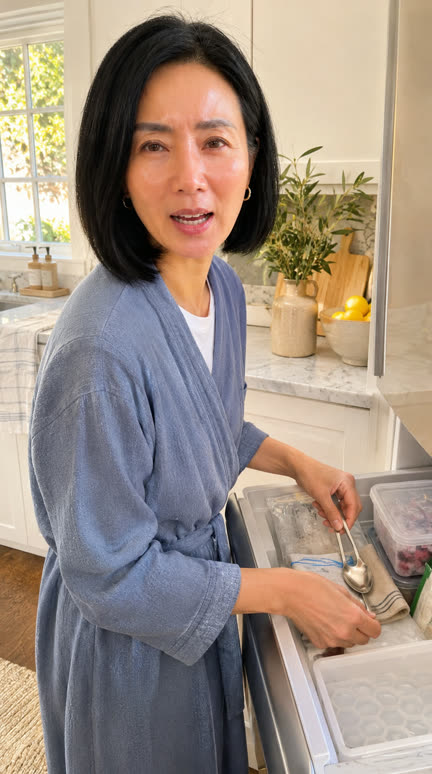
Put two spoons in the freezer tonight, and tomorrow your puffy eyes will thank you.
She puts two metal spoons into an open freezer drawer and looks back at the camera.
iPhone video on a tripod in a bright warm home kitchen with warm window daylight, slight natural shake. Action: She puts two metal spoons into an open freezer drawer and looks back at the camera. Dialogue (54-year-old Korean-American woman, warm natural voice with a light Korean accent, casual and fast, like talking to a friend): "Put two spoons in the freezer tonight, and tomorrow your puffy eyes will thank you." She talks fast but calm and relaxed in her natural warm, low-to-mid voice, says exactly these words and nothing else. Audio: real iPhone mic sound, quiet kitchen, no music. No text on screen.
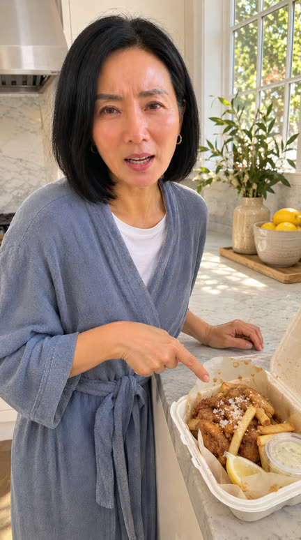
After fifty, we hold more fluid under the eyes overnight, especially after salty food or bad sleep.
Morning: her under-eyes look puffy; she points at a salty takeout box on the counter on "salty food".
iPhone video on a tripod in a bright warm home kitchen with warm window daylight, slight natural shake. Action: Morning: her under-eyes look puffy; she points at a salty takeout box on the counter on "salty food". Dialogue (54-year-old Korean-American woman, warm natural voice with a light Korean accent, casual and fast, like talking to a friend): "After fifty, we hold more fluid under the eyes overnight, especially after salty food or bad sleep." She talks fast but calm and relaxed in her natural warm, low-to-mid voice, says exactly these words and nothing else. Audio: real iPhone mic sound, quiet kitchen, no music. No text on screen.
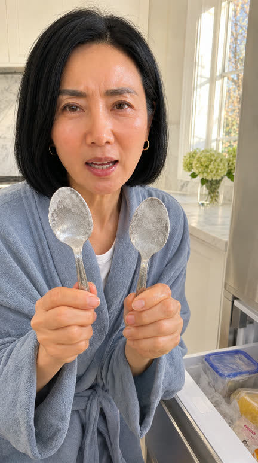
Take them out in the morning; they'll be frosty.
She takes two frosted spoons out of the freezer and shows them to the camera.
iPhone video on a tripod in a bright warm home kitchen with warm window daylight, slight natural shake. Action: She takes two frosted spoons out of the freezer and shows them to the camera. Dialogue (54-year-old Korean-American woman, warm natural voice with a light Korean accent, casual and fast, like talking to a friend): "Take them out in the morning; they'll be frosty." She talks fast but calm and relaxed in her natural warm, low-to-mid voice, says exactly these words and nothing else. Audio: real iPhone mic sound, quiet kitchen, no music. No text on screen.
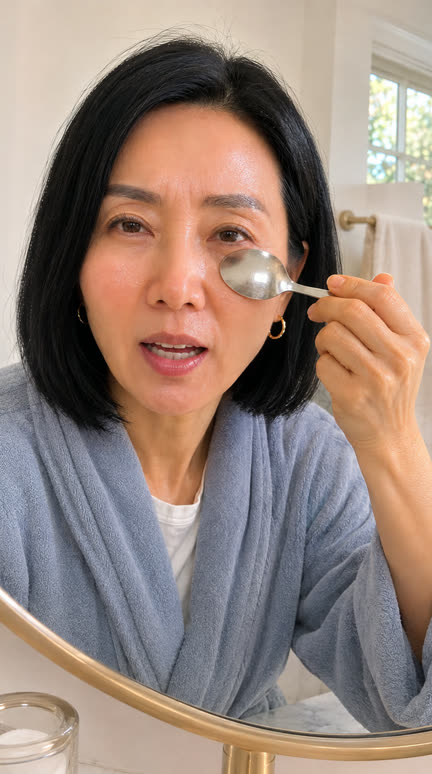
Curved side down, press gently under the eye and slide out toward your temple.
She presses the curved back of a cold spoon under one eye and slides it slowly out toward her temple.
iPhone video on a tripod in a bright warm home bathroom with a round mirror and warm morning window light, slight natural shake. Action: She presses the curved back of a cold spoon under one eye and slides it slowly out toward her temple. Dialogue (54-year-old Korean-American woman, warm natural voice with a light Korean accent, casual and fast, like talking to a friend): "Curved side down, press gently under the eye and slide out toward your temple." She talks fast but calm and relaxed in her natural warm, low-to-mid voice, says exactly these words and nothing else. Audio: real iPhone mic sound, quiet bathroom, no music. No text on screen.
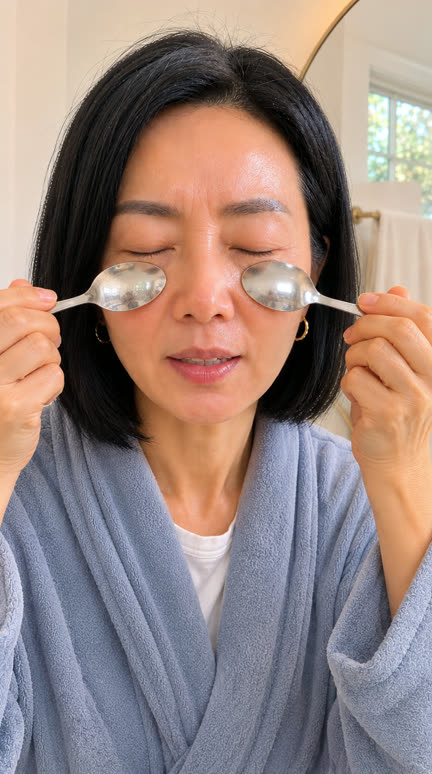
Hold it about thirty seconds, then swap to the cold spoon in your other hand.
Eyes closed, she holds a spoon under each eye, then swaps hands on "swap".
iPhone video on a tripod in a bright warm home bathroom with a round mirror and warm morning window light, slight natural shake. Action: Eyes closed, she holds a spoon under each eye, then swaps hands on "swap". Dialogue (54-year-old Korean-American woman, warm natural voice with a light Korean accent, casual and fast, like talking to a friend): "Hold it about thirty seconds, then swap to the cold spoon in your other hand." She talks fast but calm and relaxed in her natural warm, low-to-mid voice, says exactly these words and nothing else. Audio: real iPhone mic sound, quiet bathroom, no music. No text on screen.
That's it. Less puffy in under two minutes.
She opens her eyes, fresh and de-puffed, and smiles on "less puffy".
iPhone video on a tripod in a bright warm home bathroom with a round mirror and warm morning window light, slight natural shake. Action: She opens her eyes, fresh and de-puffed, and smiles on "less puffy". Dialogue (54-year-old Korean-American woman, warm natural voice with a light Korean accent, casual and fast, like talking to a friend): "That's it. Less puffy in under two minutes." She talks fast but calm and relaxed in her natural warm, low-to-mid voice, says exactly these words and nothing else. Audio: real iPhone mic sound, quiet bathroom, no music. No text on screen.
Follow me for more Korean tricks women over fifty can do at home.
She smiles warmly at the camera holding the two spoons; big smile on "follow me".
iPhone video on a tripod in a bright warm home bathroom with a round mirror and warm morning window light, slight natural shake. Action: She smiles warmly at the camera holding the two spoons; big smile on "follow me". Dialogue (54-year-old Korean-American woman, warm natural voice with a light Korean accent, casual and fast, like talking to a friend): "Follow me for more Korean tricks women over fifty can do at home." She talks fast but calm and relaxed in her natural warm, low-to-mid voice, says exactly these words and nothing else. Audio: real iPhone mic sound, quiet bathroom, no music. No text on screen.
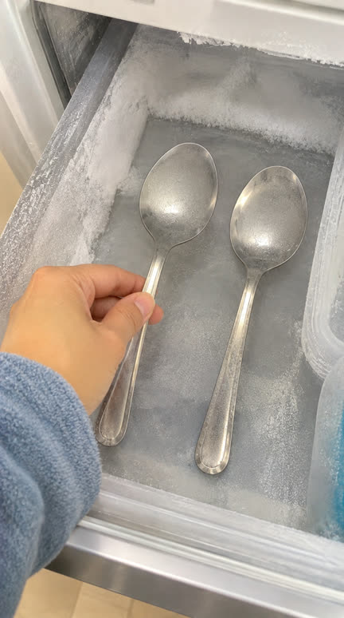
(close-up insert, no line – plays over the line above)
iPhone macro video, bright warm natural home light, steady hand-held. Close-up: two metal spoons laid in a freezer drawer next to frost. Silent B-roll: nobody talks. Audio: quiet room sound, no music. No text on screen.
iPhone macro video, bright warm natural home light, steady hand-held. Close-up: two metal spoons laid in a freezer drawer next to frost. Silent B-roll: nobody talks. Audio: quiet room sound, no music. No text on screen.
(close-up insert, no line – plays over the line above)
iPhone macro video, bright warm natural home light, steady hand-held. Close-up: an open salty takeout box with soy sauce packets on a kitchen counter. Silent B-roll: nobody talks. Audio: quiet room sound, no music. No te
iPhone macro video, bright warm natural home light, steady hand-held. Close-up: an open salty takeout box with soy sauce packets on a kitchen counter. Silent B-roll: nobody talks. Audio: quiet room sound, no music. No text on screen.
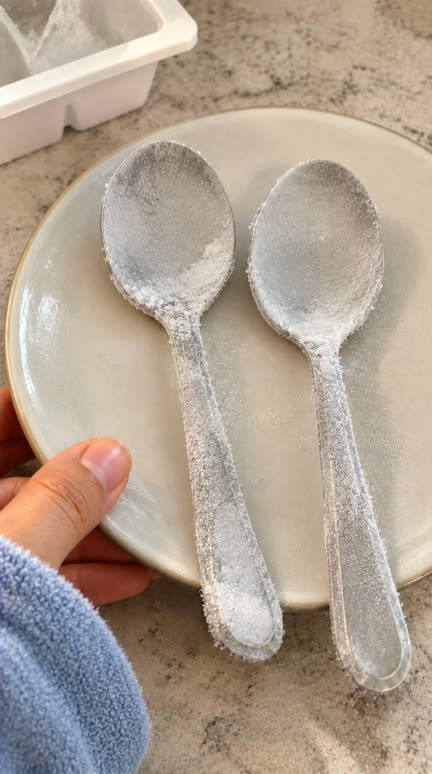
(close-up insert, no line – plays over the line above)
iPhone macro video, bright warm natural home light, steady hand-held. Macro: two metal spoons covered in white frost on a small plate. Silent B-roll: nobody talks. Audio: quiet room sound, no music. No text on screen.
iPhone macro video, bright warm natural home light, steady hand-held. Macro: two metal spoons covered in white frost on a small plate. Silent B-roll: nobody talks. Audio: quiet room sound, no music. No text on screen.
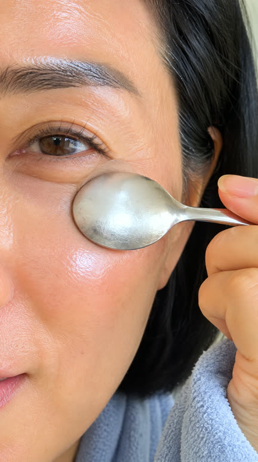
(close-up insert, no line – plays over the line above)
iPhone macro video, bright warm natural home light, steady hand-held. Macro: the curved back of a frosted spoon gliding under a woman's eye toward the temple. Silent B-roll: nobody talks. Audio: quiet room sound, no musi
iPhone macro video, bright warm natural home light, steady hand-held. Macro: the curved back of a frosted spoon gliding under a woman's eye toward the temple. Silent B-roll: nobody talks. Audio: quiet room sound, no music. No text on screen.
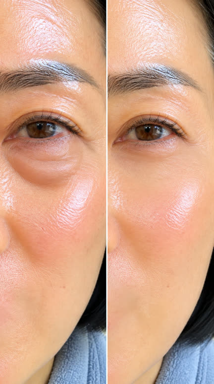
(close-up insert, no line – plays over the line above)
iPhone macro video, bright warm natural home light, steady hand-held. Split frame, the same woman's eye area: left puffy under-eye bags, right smooth and fresh. Silent B-roll: nobody talks. Audio: quiet room sound, no mu
iPhone macro video, bright warm natural home light, steady hand-held. Split frame, the same woman's eye area: left puffy under-eye bags, right smooth and fresh. Silent B-roll: nobody talks. Audio: quiet room sound, no music. No text on screen.
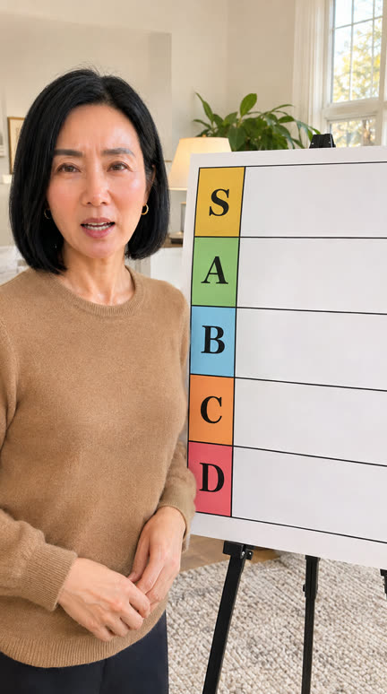
I'm ranking moisturizing ingredients for skin over fifty, from worst to best.
She stands perfectly still for the first half second, then comes alive and gestures at the tier board on "ranking".
iPhone video on a tripod in a bright warm home living room with a white wall and warm window light, slight natural shake. Action: She stands perfectly still for the first half second, then comes alive and gestures at the tier board on "ranking". Dialogue (54-year-old Korean-American woman, warm natural voice with a light Korean accent, casual and fast, like talking to a friend): "I'm ranking moisturizing ingredients for skin over fifty, from worst to best." She talks fast but calm and relaxed in her natural warm, low-to-mid voice, says exactly these words and nothing else. Audio: real iPhone mic sound, quiet living room, no music. No text on screen.
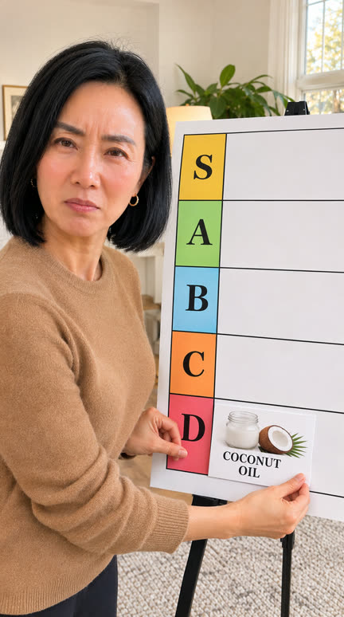
Coconut oil. D tier. Feels rich, but on the face it can clog pores and just sits on top.
She sticks a coconut oil card on the D row of the tier board and shakes her head on "sits on top".
iPhone video on a tripod in a bright warm home living room with a white wall and warm window light, slight natural shake. Action: She sticks a coconut oil card on the D row of the tier board and shakes her head on "sits on top". Dialogue (54-year-old Korean-American woman, warm natural voice with a light Korean accent, casual and fast, like talking to a friend): "Coconut oil. D tier. Feels rich, but on the face it can clog pores and just sits on top." She talks fast but calm and relaxed in her natural warm, low-to-mid voice, says exactly these words and nothing else. Audio: real iPhone mic sound, quiet living room, no music. No text on screen.
Petroleum jelly. C tier. Great to lock moisture in at night, but it adds no water on its own.
She sticks a petroleum jelly card on the C row of the board.
iPhone video on a tripod in a bright warm home living room with a white wall and warm window light, slight natural shake. Action: She sticks a petroleum jelly card on the C row of the board. Dialogue (54-year-old Korean-American woman, warm natural voice with a light Korean accent, casual and fast, like talking to a friend): "Petroleum jelly. C tier. Great to lock moisture in at night, but it adds no water on its own." She talks fast but calm and relaxed in her natural warm, low-to-mid voice, says exactly these words and nothing else. Audio: real iPhone mic sound, quiet living room, no music. No text on screen.
Glycerin. B tier. It pulls water into the skin, cheap and it works.
She sticks a glycerin card on the B row and nods on "it works".
iPhone video on a tripod in a bright warm home living room with a white wall and warm window light, slight natural shake. Action: She sticks a glycerin card on the B row and nods on "it works". Dialogue (54-year-old Korean-American woman, warm natural voice with a light Korean accent, casual and fast, like talking to a friend): "Glycerin. B tier. It pulls water into the skin, cheap and it works." She talks fast but calm and relaxed in her natural warm, low-to-mid voice, says exactly these words and nothing else. Audio: real iPhone mic sound, quiet living room, no music. No text on screen.
Hyaluronic acid. A tier, but only on damp skin, or it can feel tight.
She sticks a hyaluronic acid card on the A row and raises one finger on "only on damp skin".
iPhone video on a tripod in a bright warm home living room with a white wall and warm window light, slight natural shake. Action: She sticks a hyaluronic acid card on the A row and raises one finger on "only on damp skin". Dialogue (54-year-old Korean-American woman, warm natural voice with a light Korean accent, casual and fast, like talking to a friend): "Hyaluronic acid. A tier, but only on damp skin, or it can feel tight." She talks fast but calm and relaxed in her natural warm, low-to-mid voice, says exactly these words and nothing else. Audio: real iPhone mic sound, quiet living room, no music. No text on screen.
Sodium P C A. A tier. It's the moisture your skin makes on its own, and we make less of it as we age.
She sticks a sodium P C A card on the A row next to the first one.
iPhone video on a tripod in a bright warm home living room with a white wall and warm window light, slight natural shake. Action: She sticks a sodium P C A card on the A row next to the first one. Dialogue (54-year-old Korean-American woman, warm natural voice with a light Korean accent, casual and fast, like talking to a friend): "Sodium P C A. A tier. It's the moisture your skin makes on its own, and we make less of it as we age." She talks fast but calm and relaxed in her natural warm, low-to-mid voice, says exactly these words and nothing else. Audio: real iPhone mic sound, quiet living room, no music. No text on screen.
Peptides. S tier. They help skin look firmer and smoother over time.
She sticks a peptides card on the top S row and taps it, smiling.
iPhone video on a tripod in a bright warm home living room with a white wall and warm window light, slight natural shake. Action: She sticks a peptides card on the top S row and taps it, smiling. Dialogue (54-year-old Korean-American woman, warm natural voice with a light Korean accent, casual and fast, like talking to a friend): "Peptides. S tier. They help skin look firmer and smoother over time." She talks fast but calm and relaxed in her natural warm, low-to-mid voice, says exactly these words and nothing else. Audio: real iPhone mic sound, quiet living room, no music. No text on screen.
The secret is using the top ones together. Follow me, and I'll show you how.
She stands beside the full board pointing at the S and A rows, then smiles at the camera on "follow me".
iPhone video on a tripod in a bright warm home living room with a white wall and warm window light, slight natural shake. Action: She stands beside the full board pointing at the S and A rows, then smiles at the camera on "follow me". Dialogue (54-year-old Korean-American woman, warm natural voice with a light Korean accent, casual and fast, like talking to a friend): "The secret is using the top ones together. Follow me, and I'll show you how." She talks fast but calm and relaxed in her natural warm, low-to-mid voice, says exactly these words and nothing else. Audio: real iPhone mic sound, quiet living room, no music. No text on screen.
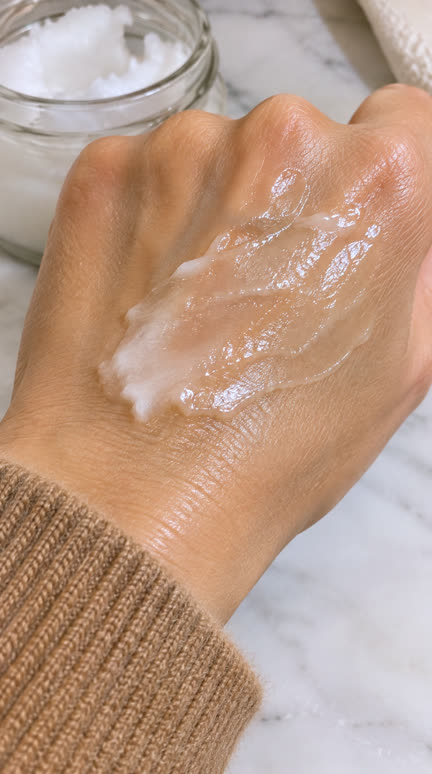
(close-up insert, no line – plays over the line above)
iPhone macro video, bright warm natural home light, steady hand-held. Macro: a greasy smear of coconut oil sitting on top of the back of a hand, shiny, not absorbed. Silent B-roll: nobody talks. Audio: quiet room sound,
iPhone macro video, bright warm natural home light, steady hand-held. Macro: a greasy smear of coconut oil sitting on top of the back of a hand, shiny, not absorbed. Silent B-roll: nobody talks. Audio: quiet room sound, no music. No text on screen.
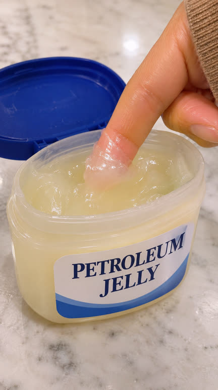
(close-up insert, no line – plays over the line above)
iPhone macro video, bright warm natural home light, steady hand-held. Macro: a fingertip dipping into a tub of petroleum jelly. Silent B-roll: nobody talks. Audio: quiet room sound, no music. No text on screen.
iPhone macro video, bright warm natural home light, steady hand-held. Macro: a fingertip dipping into a tub of petroleum jelly. Silent B-roll: nobody talks. Audio: quiet room sound, no music. No text on screen.
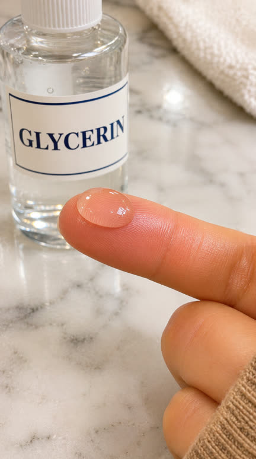
(close-up insert, no line – plays over the line above)
iPhone macro video, bright warm natural home light, steady hand-held. Macro: a clear drop of glycerin on a fingertip, glistening. Silent B-roll: nobody talks. Audio: quiet room sound, no music. No text on screen.
iPhone macro video, bright warm natural home light, steady hand-held. Macro: a clear drop of glycerin on a fingertip, glistening. Silent B-roll: nobody talks. Audio: quiet room sound, no music. No text on screen.
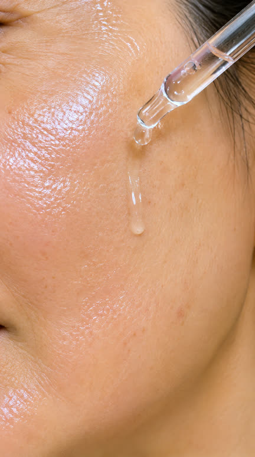
(close-up insert, no line – plays over the line above)
iPhone macro video, bright warm natural home light, steady hand-held. Macro: hyaluronic acid drops from a glass dropper onto damp, dewy skin on a cheek. Silent B-roll: nobody talks. Audio: quiet room sound, no music. No
iPhone macro video, bright warm natural home light, steady hand-held. Macro: hyaluronic acid drops from a glass dropper onto damp, dewy skin on a cheek. Silent B-roll: nobody talks. Audio: quiet room sound, no music. No text on screen.
(close-up insert, no line – plays over the line above)
iPhone macro video, bright warm natural home light, steady hand-held. Close-up of the tier board: the PEPTIDES card on the gold S row with a gold star sticker. Silent B-roll: nobody talks. Audio: quiet room sound, no mus
iPhone macro video, bright warm natural home light, steady hand-held. Close-up of the tier board: the PEPTIDES card on the gold S row with a gold star sticker. Silent B-roll: nobody talks. Audio: quiet room sound, no music. No text on screen.
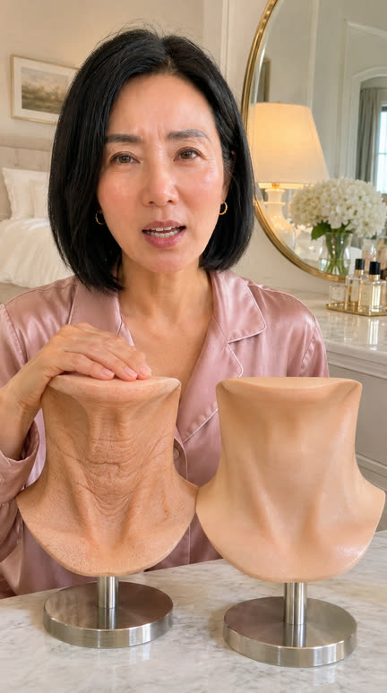
If your neck looks crepey like this, do this two-minute massage before bed.
She stands beside two life-size neck display models on the vanity, her hand on the left crepey one on "like this".
iPhone video on a tripod in a bright warm home bedroom with white linen, a vanity mirror and a warm bedside lamp glow, slight natural shake. Action: She stands beside two life-size neck display models on the vanity, her hand on the left crepey one on "like this". Dialogue (54-year-old Korean-American woman, warm natural voice with a light Korean accent, casual and fast, like talking to a friend): "If your neck looks crepey like this, do this two-minute massage before bed." She talks fast but calm and relaxed in her natural warm, low-to-mid voice, says exactly these words and nothing else. Audio: real iPhone mic sound, quiet bedroom, no music. No text on screen.
Warm a little of your moisturizer between your palms first, never on dry skin.
She rubs a little cream between her palms to warm it.
iPhone video on a tripod in a bright warm home bedroom with white linen, a vanity mirror and a warm bedside lamp glow, slight natural shake. Action: She rubs a little cream between her palms to warm it. Dialogue (54-year-old Korean-American woman, warm natural voice with a light Korean accent, casual and fast, like talking to a friend): "Warm a little of your moisturizer between your palms first, never on dry skin." She talks fast but calm and relaxed in her natural warm, low-to-mid voice, says exactly these words and nothing else. Audio: real iPhone mic sound, quiet bedroom, no music. No text on screen.
Flat hands, stroke up from your collarbone to your jaw. Always up, never down.
Flat hands on her neck, she strokes slowly upward from collarbone to jaw on "always up".
iPhone video on a tripod in a bright warm home bedroom with white linen, a vanity mirror and a warm bedside lamp glow, slight natural shake. Action: Flat hands on her neck, she strokes slowly upward from collarbone to jaw on "always up". Dialogue (54-year-old Korean-American woman, warm natural voice with a light Korean accent, casual and fast, like talking to a friend): "Flat hands, stroke up from your collarbone to your jaw. Always up, never down." She talks fast but calm and relaxed in her natural warm, low-to-mid voice, says exactly these words and nothing else. Audio: real iPhone mic sound, quiet bedroom, no music. No text on screen.
Ten strokes on each side.
She strokes up the side of her neck with one flat hand.
iPhone video on a tripod in a bright warm home bedroom with white linen, a vanity mirror and a warm bedside lamp glow, slight natural shake. Action: She strokes up the side of her neck with one flat hand. Dialogue (54-year-old Korean-American woman, warm natural voice with a light Korean accent, casual and fast, like talking to a friend): "Ten strokes on each side." She talks fast but calm and relaxed in her natural warm, low-to-mid voice, says exactly these words and nothing else. Audio: real iPhone mic sound, quiet bedroom, no music. No text on screen.
Then knuckles under your jaw, slide from your chin out to your ears.
Her knuckles glide along her jawline from chin out to the ear.
iPhone video on a tripod in a bright warm home bedroom with white linen, a vanity mirror and a warm bedside lamp glow, slight natural shake. Action: Her knuckles glide along her jawline from chin out to the ear. Dialogue (54-year-old Korean-American woman, warm natural voice with a light Korean accent, casual and fast, like talking to a friend): "Then knuckles under your jaw, slide from your chin out to your ears." She talks fast but calm and relaxed in her natural warm, low-to-mid voice, says exactly these words and nothing else. Audio: real iPhone mic sound, quiet bedroom, no music. No text on screen.
Last, tilt your chin up and hold for ten seconds.
She tilts her chin up gently and holds the stretch.
iPhone video on a tripod in a bright warm home bedroom with white linen, a vanity mirror and a warm bedside lamp glow, slight natural shake. Action: She tilts her chin up gently and holds the stretch. Dialogue (54-year-old Korean-American woman, warm natural voice with a light Korean accent, casual and fast, like talking to a friend): "Last, tilt your chin up and hold for ten seconds." She talks fast but calm and relaxed in her natural warm, low-to-mid voice, says exactly these words and nothing else. Audio: real iPhone mic sound, quiet bedroom, no music. No text on screen.
Every night, and your neck looks smoother and feels so much softer.
Her fingertips trail down her smooth glowing neck; she smiles on "softer".
iPhone video on a tripod in a bright warm home bedroom with white linen, a vanity mirror and a warm bedside lamp glow, slight natural shake. Action: Her fingertips trail down her smooth glowing neck; she smiles on "softer". Dialogue (54-year-old Korean-American woman, warm natural voice with a light Korean accent, casual and fast, like talking to a friend): "Every night, and your neck looks smoother and feels so much softer." She talks fast but calm and relaxed in her natural warm, low-to-mid voice, says exactly these words and nothing else. Audio: real iPhone mic sound, quiet bedroom, no music. No text on screen.
Follow me for more of what I do at home after fifty.
She smiles warmly at the camera; big smile on "follow me".
iPhone video on a tripod in a bright warm home bedroom with white linen, a vanity mirror and a warm bedside lamp glow, slight natural shake. Action: She smiles warmly at the camera; big smile on "follow me". Dialogue (54-year-old Korean-American woman, warm natural voice with a light Korean accent, casual and fast, like talking to a friend): "Follow me for more of what I do at home after fifty." She talks fast but calm and relaxed in her natural warm, low-to-mid voice, says exactly these words and nothing else. Audio: real iPhone mic sound, quiet bedroom, no music. No text on screen.
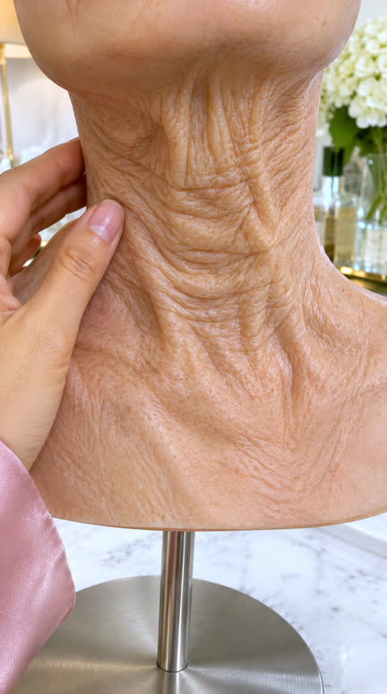
(close-up insert, no line – plays over the line above)
iPhone macro video, bright warm natural home light, steady hand-held. Tight close-up of a display neck model: deep crinkled crepey lines across the throat. Silent B-roll: nobody talks. Audio: quiet room sound, no music.
iPhone macro video, bright warm natural home light, steady hand-held. Tight close-up of a display neck model: deep crinkled crepey lines across the throat. Silent B-roll: nobody talks. Audio: quiet room sound, no music. No text on screen.
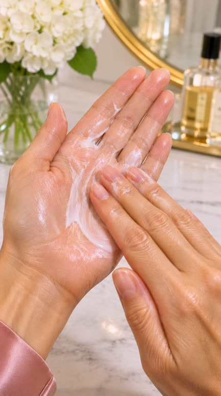
(close-up insert, no line – plays over the line above)
iPhone macro video, bright warm natural home light, steady hand-held. Macro: two palms rubbing a little white cream together, a soft shine. Silent B-roll: nobody talks. Audio: quiet room sound, no music. No text on scree
iPhone macro video, bright warm natural home light, steady hand-held. Macro: two palms rubbing a little white cream together, a soft shine. Silent B-roll: nobody talks. Audio: quiet room sound, no music. No text on screen.
(close-up insert, no line – plays over the line above)
iPhone macro video, bright warm natural home light, steady hand-held. Close-up: flat fingers stroking upward on a woman's neck from collarbone to jaw. Silent B-roll: nobody talks. Audio: quiet room sound, no music. No te
iPhone macro video, bright warm natural home light, steady hand-held. Close-up: flat fingers stroking upward on a woman's neck from collarbone to jaw. Silent B-roll: nobody talks. Audio: quiet room sound, no music. No text on screen.
(close-up insert, no line – plays over the line above)
iPhone macro video, bright warm natural home light, steady hand-held. Macro: knuckles gliding along a jawline toward the ear. Silent B-roll: nobody talks. Audio: quiet room sound, no music. No text on screen.
iPhone macro video, bright warm natural home light, steady hand-held. Macro: knuckles gliding along a jawline toward the ear. Silent B-roll: nobody talks. Audio: quiet room sound, no music. No text on screen.
(close-up insert, no line – plays over the line above)
iPhone macro video, bright warm natural home light, steady hand-held. Macro: a smooth, dewy, glowing neck, fingertips trailing down. Silent B-roll: nobody talks. Audio: quiet room sound, no music. No text on screen.
iPhone macro video, bright warm natural home light, steady hand-held. Macro: a smooth, dewy, glowing neck, fingertips trailing down. Silent B-roll: nobody talks. Audio: quiet room sound, no music. No text on screen.
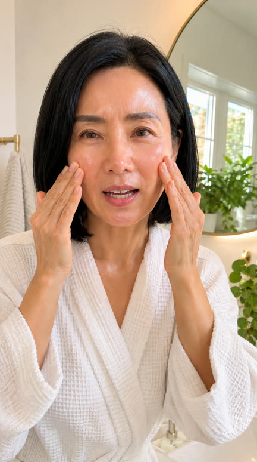
Korean women pat their toner on seven times, and here's why.
She pats toner onto her glowing cheeks with both hands, then looks at the camera on "here's why".
iPhone video on a tripod in a bright warm home bathroom with a round mirror and warm morning window light, slight natural shake. Action: She pats toner onto her glowing cheeks with both hands, then looks at the camera on "here's why". Dialogue (54-year-old Korean-American woman, warm natural voice with a light Korean accent, casual and fast, like talking to a friend): "Korean women pat their toner on seven times, and here's why." She talks fast but calm and relaxed in her natural warm, low-to-mid voice, says exactly these words and nothing else. Audio: real iPhone mic sound, quiet bathroom, no music. No text on screen.
After fifty, one layer of toner just disappears. Your skin drinks it up and still feels tight.
She touches her cheek, her skin looks a bit matte, and she frowns slightly on "still feels tight".
iPhone video on a tripod in a bright warm home bathroom with a round mirror and warm morning window light, slight natural shake. Action: She touches her cheek, her skin looks a bit matte, and she frowns slightly on "still feels tight". Dialogue (54-year-old Korean-American woman, warm natural voice with a light Korean accent, casual and fast, like talking to a friend): "After fifty, one layer of toner just disappears. Your skin drinks it up and still feels tight." She talks fast but calm and relaxed in her natural warm, low-to-mid voice, says exactly these words and nothing else. Audio: real iPhone mic sound, quiet bathroom, no music. No text on screen.
So you use a watery, hydrating toner, no alcohol.
She pours a clear toner from a glass bottle into her palm.
iPhone video on a tripod in a bright warm home bathroom with a round mirror and warm morning window light, slight natural shake. Action: She pours a clear toner from a glass bottle into her palm. Dialogue (54-year-old Korean-American woman, warm natural voice with a light Korean accent, casual and fast, like talking to a friend): "So you use a watery, hydrating toner, no alcohol." She talks fast but calm and relaxed in her natural warm, low-to-mid voice, says exactly these words and nothing else. Audio: real iPhone mic sound, quiet bathroom, no music. No text on screen.
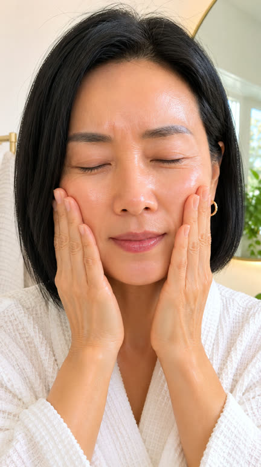
Pour a little in your palms and press it in, don't rub.
She presses both palms gently onto her cheeks, not rubbing.
iPhone video on a tripod in a bright warm home bathroom with a round mirror and warm morning window light, slight natural shake. Action: She presses both palms gently onto her cheeks, not rubbing. Dialogue (54-year-old Korean-American woman, warm natural voice with a light Korean accent, casual and fast, like talking to a friend): "Pour a little in your palms and press it in, don't rub." She talks fast but calm and relaxed in her natural warm, low-to-mid voice, says exactly these words and nothing else. Audio: real iPhone mic sound, quiet bathroom, no music. No text on screen.
Wait ten seconds, then do it again. Seven thin layers.
She holds up seven fingers counting, then presses her palms on again.
iPhone video on a tripod in a bright warm home bathroom with a round mirror and warm morning window light, slight natural shake. Action: She holds up seven fingers counting, then presses her palms on again. Dialogue (54-year-old Korean-American woman, warm natural voice with a light Korean accent, casual and fast, like talking to a friend): "Wait ten seconds, then do it again. Seven thin layers." She talks fast but calm and relaxed in her natural warm, low-to-mid voice, says exactly these words and nothing else. Audio: real iPhone mic sound, quiet bathroom, no music. No text on screen.
By layer five you can feel your skin get bouncy.
She presses a fingertip into her cheek and it springs back; she smiles on "bouncy".
iPhone video on a tripod in a bright warm home bathroom with a round mirror and warm morning window light, slight natural shake. Action: She presses a fingertip into her cheek and it springs back; she smiles on "bouncy". Dialogue (54-year-old Korean-American woman, warm natural voice with a light Korean accent, casual and fast, like talking to a friend): "By layer five you can feel your skin get bouncy." She talks fast but calm and relaxed in her natural warm, low-to-mid voice, says exactly these words and nothing else. Audio: real iPhone mic sound, quiet bathroom, no music. No text on screen.
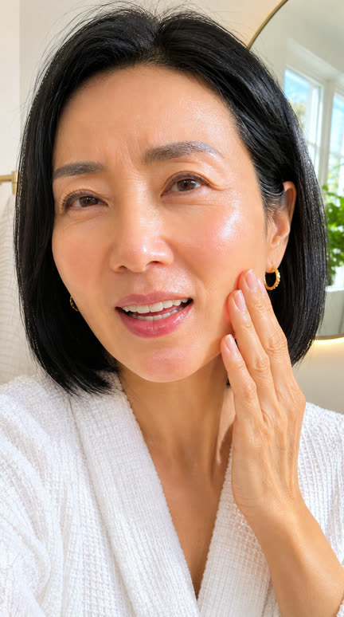
Matte and tight before, dewy after.
She turns her cheek to the window light, glowing and dewy.
iPhone video on a tripod in a bright warm home bathroom with a round mirror and warm morning window light, slight natural shake. Action: She turns her cheek to the window light, glowing and dewy. Dialogue (54-year-old Korean-American woman, warm natural voice with a light Korean accent, casual and fast, like talking to a friend): "Matte and tight before, dewy after." She talks fast but calm and relaxed in her natural warm, low-to-mid voice, says exactly these words and nothing else. Audio: real iPhone mic sound, quiet bathroom, no music. No text on screen.
Follow me for more Korean skin tricks that actually work after fifty.
She smiles warmly at the camera, glowing; big smile on "follow me".
iPhone video on a tripod in a bright warm home bathroom with a round mirror and warm morning window light, slight natural shake. Action: She smiles warmly at the camera, glowing; big smile on "follow me". Dialogue (54-year-old Korean-American woman, warm natural voice with a light Korean accent, casual and fast, like talking to a friend): "Follow me for more Korean skin tricks that actually work after fifty." She talks fast but calm and relaxed in her natural warm, low-to-mid voice, says exactly these words and nothing else. Audio: real iPhone mic sound, quiet bathroom, no music. No text on screen.
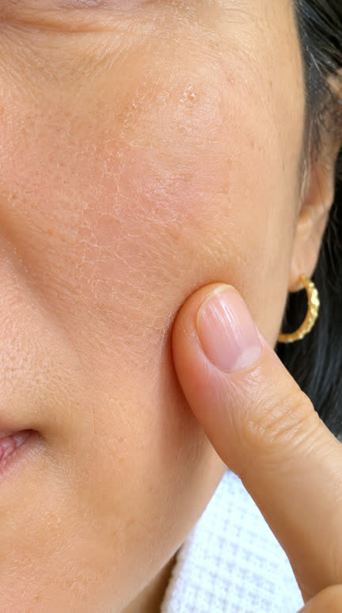
(close-up insert, no line – plays over the line above)
iPhone macro video, bright warm natural home light, steady hand-held. Macro: a matte, dry-looking cheek with fine dry lines, no shine. Silent B-roll: nobody talks. Audio: quiet room sound, no music. No text on screen.
iPhone macro video, bright warm natural home light, steady hand-held. Macro: a matte, dry-looking cheek with fine dry lines, no shine. Silent B-roll: nobody talks. Audio: quiet room sound, no music. No text on screen.
(close-up insert, no line – plays over the line above)
iPhone macro video, bright warm natural home light, steady hand-held. Macro: clear watery toner poured from a glass bottle into a cupped palm. Silent B-roll: nobody talks. Audio: quiet room sound, no music. No text on sc
iPhone macro video, bright warm natural home light, steady hand-held. Macro: clear watery toner poured from a glass bottle into a cupped palm. Silent B-roll: nobody talks. Audio: quiet room sound, no music. No text on screen.
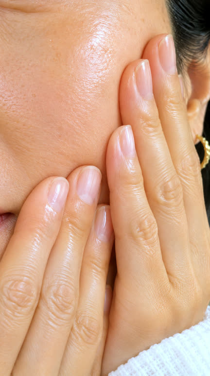
(close-up insert, no line – plays over the line above)
iPhone macro video, bright warm natural home light, steady hand-held. Close-up: two palms pressing gently on a cheek. Silent B-roll: nobody talks. Audio: quiet room sound, no music. No text on screen.
iPhone macro video, bright warm natural home light, steady hand-held. Close-up: two palms pressing gently on a cheek. Silent B-roll: nobody talks. Audio: quiet room sound, no music. No text on screen.
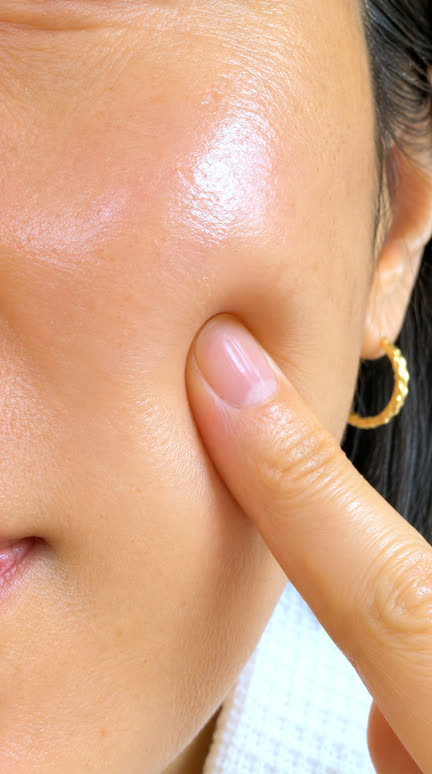
(close-up insert, no line – plays over the line above)
iPhone macro video, bright warm natural home light, steady hand-held. Macro: a fingertip pressing into a plump dewy cheek and the skin springing back. Silent B-roll: nobody talks. Audio: quiet room sound, no music. No te
iPhone macro video, bright warm natural home light, steady hand-held. Macro: a fingertip pressing into a plump dewy cheek and the skin springing back. Silent B-roll: nobody talks. Audio: quiet room sound, no music. No text on screen.
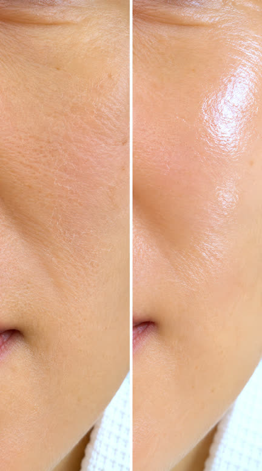
(close-up insert, no line – plays over the line above)
iPhone macro video, bright warm natural home light, steady hand-held. Split frame, the same cheek: left matte and tight, right dewy and glowing. Silent B-roll: nobody talks. Audio: quiet room sound, no music. No text on
iPhone macro video, bright warm natural home light, steady hand-held. Split frame, the same cheek: left matte and tight, right dewy and glowing. Silent B-roll: nobody talks. Audio: quiet room sound, no music. No text on screen.